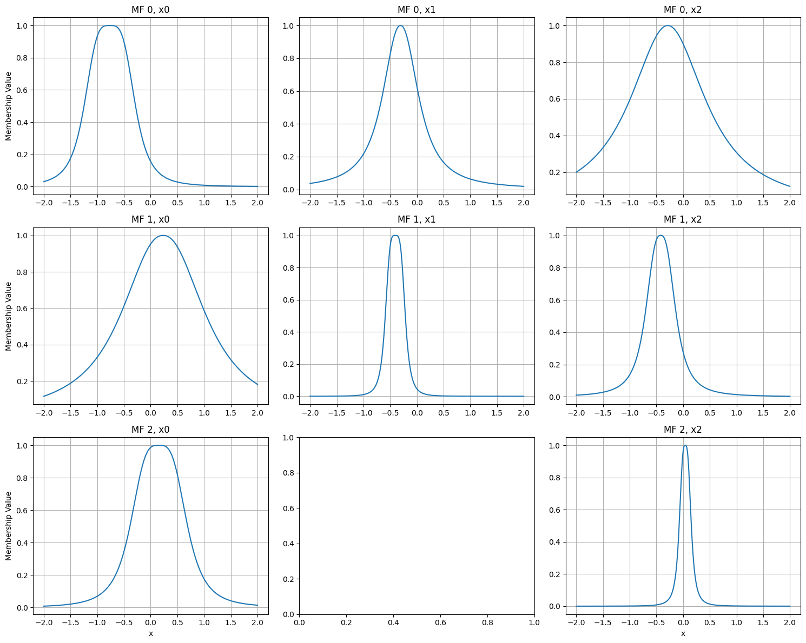
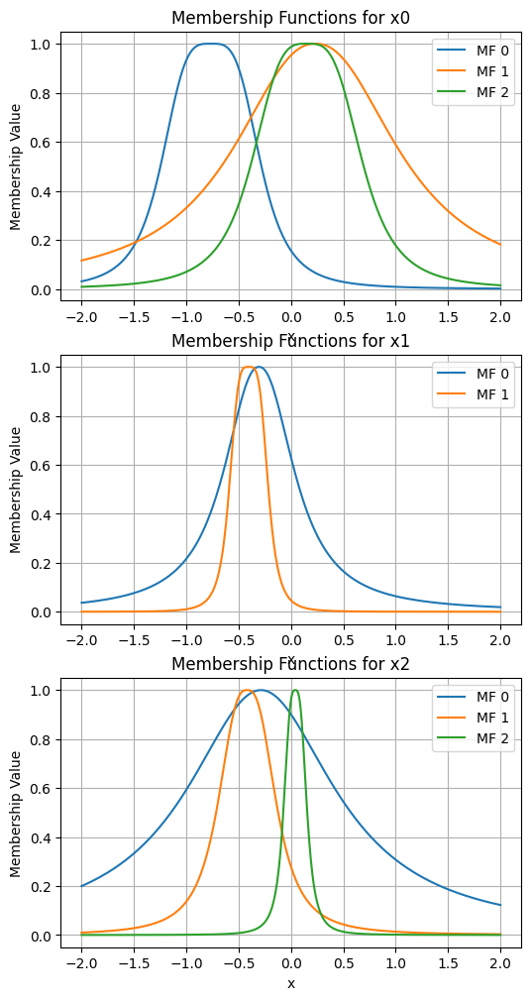
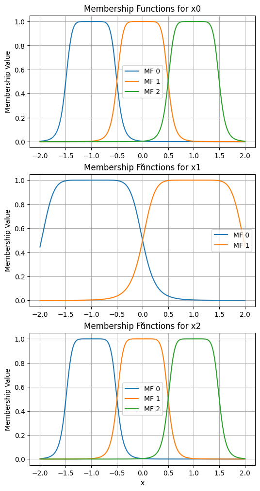

ANFIS
Modelo ANFIS clásico. Con esta clase se permiten distintos números de funciones de membresía para cada feature de los datos de entrada.
Importación
import sys
import os
sys.path.append(os.path.abspath('../'))
from neuro_fuzzy_toolbox import ANFIS
import torch
Instanciación
Los parámetros a tomar en cuenta para instanciar un modelo ANFIS son los siguientes:
mf_distribution: Lista que contiene el número de funciones de membresía para cada feature de los datos de entrada.
outputs: Número de salidas del modelo. Por defecto es 1.
membership_function: Función de membresía a utilizar. Puede ser Gaussian_MF, GeneralizedBell_MF. Por defecto es GeneralizedBell_MF.
output_type: Tipo de salida del modelo. Puede ser ‘regression’, ‘binary’ o ‘multiclass’. Por defecto es ‘regression’.
dtype: Tipo de dato de los tensores que contienen los parámetros del modelo. Por defecto es torch.float32.
Considerando que se tiene datos con 3 features por ejemplo:
x_train = 2 * torch.rand(200, 3) - 1
Antes de instanciar el modelo como tal, se debe definir la estructura de las funciones de membresía. Para ello, se debe definir una lista que contenga el número de funciones de membresía para cada feature. Por ejemplo:
mf_distribution = [3, 2, 3]
En este caso, se establece que el primer y tercer feature tienen 3 funciones de membresía, mientras que el segundo tiene 2.
Luego, se puede instanciar el modelo utilizando la distribución definida:
model = ANFIS(
mf_distribution=mf_distribution
)
Algunos métodos útiles
Casi todos los métodos y herramientas presentados con el modelo ANFIS homogéneo (h_ANFIS) son válidos para el modelo ANFIS clásico, como las múltiples salidas y las aplicaciones a distintos tipos de problemas. En este caso no existe el concepto de “reducción de reglas” debido a que el número de funciones de membresía puede variar para cada feature de los datos de entrada. A continuación se presentan las proncipales diferencias respecto al modelo ANFIS homogéneo.
plot_premises
En este caso se generarán algunos gráficos vacíos (dependiendo de la distribución establecida para las funciones de membresía).
model.plot_premises()

model.plot_premises(group_by_dim=True)

init_premises
model.init_premises(x_train)
model.plot_premises(group_by_dim=True)

show_premises_structure, premises_structure y get_premises
Los antecedentes del modelo ANFIS clásico no se almacenan en un tensor único, sino en una lista de tensores, uno por cada feature de los datos de entrada. Por lo que la interacción con estos métodos es distinta.
model.show_premises_structure()
a (x0) b (x0) c (x0) a (x1) b (x1) c (x1) a (x2) b (x2) c (x2)
MF 0 0.499232 4.0 -0.998560 0.986531 4.0 -0.985168 0.498638 4.0 -0.995316
MF 1 0.499232 4.0 -0.000096 0.986531 4.0 0.987893 0.498638 4.0 0.001960
MF 2 0.499232 4.0 0.998368 NaN NaN NaN 0.498638 4.0 0.999236
Los valores NaN indican que no existe la función de membresía correspondiente para ese feature.
El método model.premises_structure retorna el dataframe correspondiente.
Por otro lado, el método model.get_premises() retorna una lista de tensores, cuyo largo es igual al número de features de los datos de entrada (input_size).
model.get_premises()
[tensor([[ 4.9923e-01, 4.0000e+00, -9.9856e-01],
[ 4.9923e-01, 4.0000e+00, -9.5725e-05],
[ 4.9923e-01, 4.0000e+00, 9.9837e-01]]),
tensor([[ 0.9865, 4.0000, -0.9852],
[ 0.9865, 4.0000, 0.9879]]),
tensor([[ 4.9864e-01, 4.0000e+00, -9.9532e-01],
[ 4.9864e-01, 4.0000e+00, 1.9597e-03],
[ 4.9864e-01, 4.0000e+00, 9.9924e-01]])]
Note
En este caso, cada tensor tiene dimensiones (num_mfs, 3), donde num_mfs es el número de funciones de membresía para ese feature y 3 corresponde a los parámetros a, b y c de la función GeneralizedBell_MF. Sin embargo, si se hubiera utilizado Gaussian_MF, las dimensiones serían (num_mfs, 2), ya que la función de membresía Gaussian_MF solo tiene dos parámetros (mu y sigma).
Otros métodos y herramientas
El resto de métodos y herramientas presentados con el modelo ANFIS homogéneo (h_ANFIS) son válidos para el modelo ANFIS clásico: la interacción con los parámetros consecuentes, los métodos forward y predict, el manejo de distintos tipos de salidas, etc.
En general, la única diferencia entre ambos modelos es la forma en que se almacenan los parámetros de los antecedentes, debido a que el número de funciones de membresía puede variar para cada feature de los datos de entrada. Además de la ausencia del concepto de “reducción de reglas” en el modelo ANFIS clásico.
Ejemplos:
Considerando que se tienen datos con 3 features:
x_train = 2 * torch.rand(200, 3) - 1 # 200 ejemplos con 3 features
Modelo ANFIS con 1 salida para problemas de clasificación binaria
mf_distribution = [3, 2, 3]
model = ANFIS(
mf_distribution=mf_distribution,
output_type='binary'
)
model(x_train[:10])
tensor([0.6582, 0.5680, 0.4394, 0.5558, 0.6047, 0.5961, 0.5114, 0.5837, 0.5545, 0.5618], grad_fn=<SigmoidBackward0>)
model.predict(x_train[:10])
array([1, 1, 0, 1, 1, 1, 1, 1, 1, 1])
Modelo ANFIS para problema de clasificación multiclase con 3 clases
mf_distribution = [3, 2, 3]
model = ANFIS(
mf_distribution=mf_distribution,
outputs=3,
output_type='multiclass'
)
model(x_train[:10])
tensor([[ 0.0307, 0.2805, 0.2558],
[ 0.1029, -0.0219, 0.3365],
[-0.1156, 0.2894, 0.3657],
[ 0.3065, 0.1498, 0.0498],
[ 0.3051, -0.0133, 0.3439],
[ 0.0618, 0.1224, 0.0748],
[ 0.7534, 0.1007, 0.0843],
[-0.1371, 0.0147, 0.0977],
[-0.5956, -0.0822, 0.0667],
[ 0.4173, 0.2276, -0.0357]], grad_fn=<SqueezeBackward1>)
model(x_train[:10], return_probabilities=True)
tensor([[0.2828, 0.3630, 0.3542],
[0.3179, 0.2806, 0.4015],
[0.2429, 0.3641, 0.3930],
[0.3804, 0.3253, 0.2943],
[0.3614, 0.2629, 0.3757],
[0.3251, 0.3454, 0.3294],
[0.4919, 0.2561, 0.2520],
[0.2917, 0.3395, 0.3688],
[0.2169, 0.3624, 0.4206],
[0.4060, 0.3359, 0.2581]], grad_fn=<SoftmaxBackward0>)
model.predict(x_train[:10])
array([1, 2, 2, 0, 2, 1, 0, 2, 2, 0])